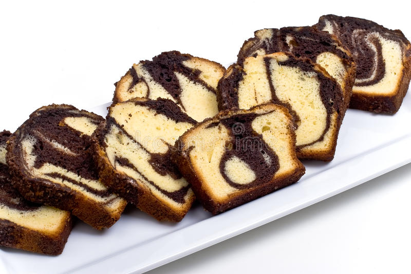
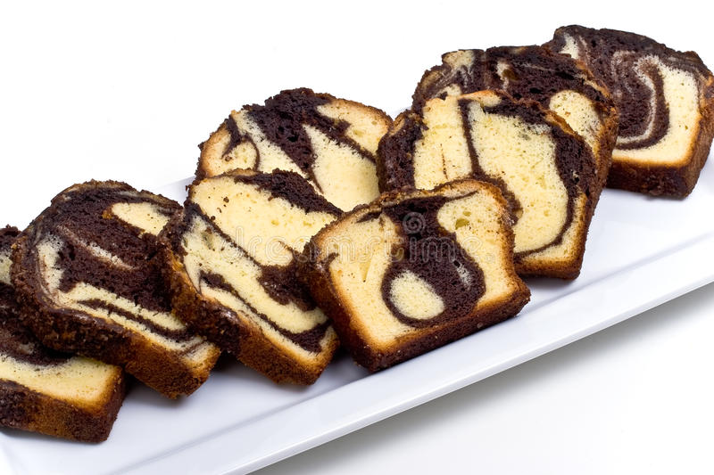

Litti Chokha Delicious recipe
If there’s one combination that is the hallmark of Bihari cuisine, it is the Litti Chokha. This is basically a very traditional and rustic dish of spiced sattu (roasted black chickpea flour) stuffed whole wheat dough balls called Litti. This is classically paired with a simple veggie mash essentially with onion, garlic, green chilies and mustard oil, called the chokha. It is a delicacy in the food culture of both Bihar as well as Jharkhand. Here in this post, I have shared the recipe of the Litti in particular and also the three chokha variants. You can even make a chokha combining all the 3 veggies or combine just the baingan and tamatar to make one chokha. I have shared the recipes of Baingan Ka Chokha (made with eggplants), Tomato Chokha (made with tomatoes) in this post. For the chokha made with potatoes, check the recipe here of Aloo Chokha. But I have listed the method to make Aloo Chokha in the recipe card below. You can pair any of the chokha variants with the litti. The Litti accompanied with the chokha is not just a flavorful pairing, but is a wholesome one too. It is one of the most popular street foods as well in Bihar and eastern Uttar Pradesh in North India.

 
